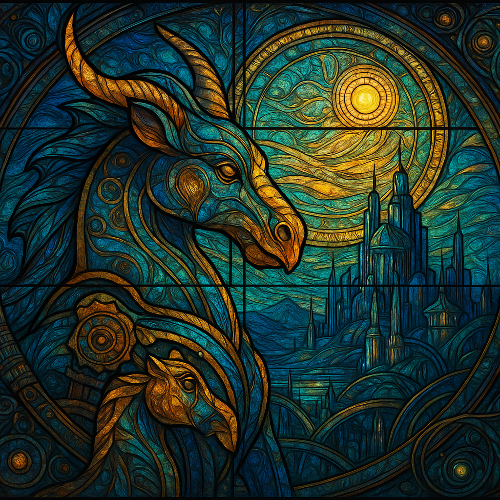

Can you help if we are a brand-new nonprofit?
Yes. NoCapsAI can help organize your first website, mission page, donation link, contact form, event page, and basic launch materials so your organization looks credible from day one.

NoCapsAI helps mission-driven organizations turn scattered ideas into a working online system: a professional website, donation flow, event pages, QR codes, outreach content, and grant-funding support.
You don't need a giant budget or a tech team to look legitimate and raise support. NoCapsAI builds the practical online system small organizations actually use — so your mission is easy to find, easy to trust, and easy to fund.
One team for the website, the campaigns, and the funding prep — instead of stitching together five tools and hoping it works.
A clean, credible home for your mission that works on every phone.
Clear giving paths so supporters can act in seconds.
Scannable codes for flyers, events, and merch that drive people to the right page.
Dedicated pages for fundraisers, drives, and awareness campaigns.
Simple intake so help and questions actually reach you.
Sell shirts, stickers, and gear to fund the work.
Organized links and resources for the people you serve.
Easy ways for your team to update content without breaking the site.
A look at what funders expect before you apply.
Keep deadlines and prospects organized in one place.
Help shaping stronger answers and supporting materials.
Copy and assets to announce your launch with confidence.
Everything a small organization needs to go from scattered to launched — website, donation flow, events, QR campaigns, forms, and a workflow your team can actually run.
We map your mission, audience, and the pages that matter most.
Website rebuild, donation/fundraiser page, event page, and QR campaign kit.
Volunteer/contact forms, community resources, and a merch/fundraiser section if needed.
Social launch copy, a launch checklist, and 30 days of support after you go live.
GrantFlow is NoCapsAI's grant-support system — not a free public tool. It helps your organization organize its profile, scout funding opportunities, track deadlines, and prepare stronger draft materials so you walk into every application prepared.
Pull your mission, programs, and proof points into one funder-ready profile.
Identify potential funding sources that fit your work and stage.
Keep applications, requirements, and due dates from slipping through the cracks.
Shape clearer responses and supporting documentation before you submit.
Note: NoCapsAI does not guarantee grant awards. We help organizations identify potential funding opportunities, organize application materials, draft strong responses, and prepare supporting documentation. Final eligibility, submission, and compliance decisions remain the responsibility of the applying organization.
For Twizted Journeys, NoCapsAI helped organize a nonprofit digital system including website updates, donation pathways, event pages, QR campaigns, merch/fundraiser sections, resource links, admin tools, and grant opportunity tracking.
NoCapsAI runs its own research, outreach, and automation agents — built on platforms we track and reference every day.
Straightforward pricing built from real nonprofit work. Pick a starting point — we'll tailor the details to your mission.
$750 – $1,500
For small organizations that need a credible online home.
Most Popular
$2,500 – $5,000
For nonprofits running events, fundraisers, outreach, or awareness campaigns.
$750 – $1,500/month
For ongoing support after launch.
Need something outside these packages? NoCapsAI can scope custom nonprofit systems, internal tools, QR workflows, dashboards, and campaign builds. Scope a custom project →
NoCapsAI LLC helps small nonprofits, outreach groups, awareness organizations, churches, youth programs, veteran-focused projects, and local mission-driven teams build practical online systems they can actually use.
The goal is simple: make your mission easier to find, easier to trust, easier to support, and easier to fund.
Yes. NoCapsAI can help organize your first website, mission page, donation link, contact form, event page, and basic launch materials so your organization looks credible from day one.
No. The website is usually the hub, but we also build QR campaigns, fundraiser pages, volunteer forms, merch sections, social launch content, admin workflows, and grant-readiness materials.
Yes. NoCapsAI helps organize your nonprofit profile, track potential funding opportunities, review readiness gaps, and prepare stronger draft materials. Grant awards are never guaranteed.
Yes. NoCapsAI builds practical systems on your domain and can hand off the files, documentation, and workflows so your organization is not trapped.
Yes. NoCapsAI is based in Rushville, Indiana and works with small nonprofits, awareness organizations, outreach groups, recovery groups, veteran-focused organizations, youth programs, churches, and community projects.
Tell us about your mission and what you're trying to launch. We'll help you look legitimate, raise support, organize outreach, and prepare for funding.
Start a Nonprofit Project